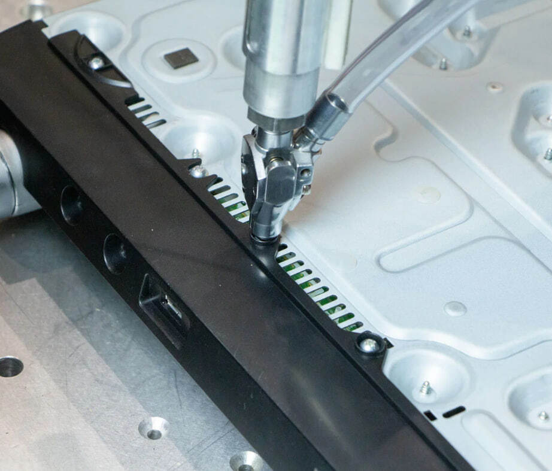
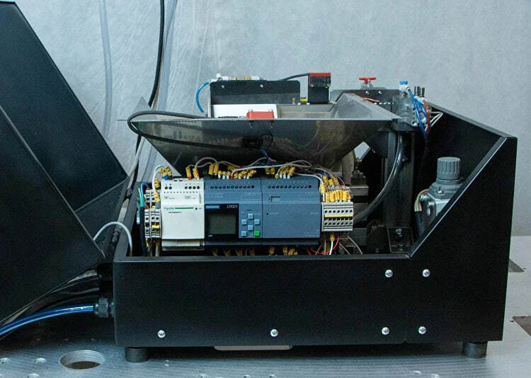
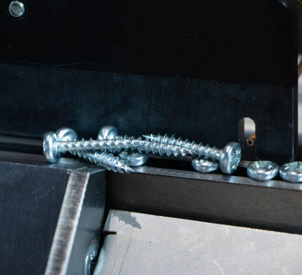

Автоматическая подача
Бункер, направляющие, датчики и селектор подачи. Подбор по форме и размерам вашего крепежа.
Промышленная сборка · Производство в России
Уберите ручную подачу винтов из сборочной операции.
Подберем оборудование под ваше изделие и крепеж. Подготовим документацию, поможем с наладкой и поддержим в работе.
Подобрать под наш крепеж Посмотреть в работе
Исполнение под задачу
Для рабочего места, ручной операции или встраивания в линию. Начинаем с изделия, а затем определяем состав оборудования.
Подходит для задачи, в которой изделие можно установить в оснастку. Подача направляет крепеж к инструменту. Загрузку детали, запуск и контроль определяем под вашу операцию.
Электрический или пневматический привод выбирается отдельно. Возможности зависят от инструмента и комплектации.
Состав оборудования
Важно согласовать весь комплект: от ориентации крепежа до установки инструмента на вашем участке.

Бункер, направляющие, датчики и селектор подачи. Подбор по форме и размерам вашего крепежа.
Инструмент и установка под доступ к соединению. Пневматический или электрический привод.
Связь узлов и установка изделия. Состав и границы интеграции фиксируем в предложении.
Параметры описанного узла подачи. Это не общие характеристики всех комплектов и не скорость сборки готового изделия.
Компетенции и сопровождение
Помогаем пройти весь путь: подобрать узлы под изделие, разобраться с запуском и поддерживать оборудование в работе.
Работаем с подающими системами, вибробункерами и виброчашами. Подбираем способ подачи по форме и размерам метизов с учетом сборочной операции.
Разбираем доступ к соединению, положение инструмента и установку детали. Если готовому комплекту нужна оснастка или доработка, обсуждаем ее с разработчиками.
Рассматриваем подачу, инструмент, управление и участие оператора вместе. Для встраивания в линию согласуем крепление, сигналы и границы интеграции.
Передаем документацию по оборудованию, чтобы у технолога была основа для эксплуатации. Нужный комплект документов определяем до заказа.
Поддерживаем при наладке оборудования на вашей операции. Вопросы настройки можно решать с производителем, не разбираясь во всем самостоятельно.
Если важно фиксировать параметры сборки, рассмотрим онлайн-мониторинг. Что именно отслеживать и как получать данные, определяем для выбранного оборудования.
Помогаем разобраться в причине неисправности и даем рекомендации по восстановлению комплекса. Вопрос можно обсудить с теми, кто разрабатывает оборудование.
Нужную позицию можно проверить у производителя в России. Для вашего комплекта заранее уточним доступность, перечень запасных частей и условия поставки.
Разработку, доработки и обслуживание обсуждаем напрямую с компанией в Рязани. Возможность выезда и объем работ согласуем под ваш участок.
До заказа согласуем документацию, помощь при запуске, порядок обращения при сбоях, гарантию и запасные части.
Экономика внедрения
Сравните полную стоимость внедрения с расходами, которые действительно удастся сократить. Зарплата оператора сама по себе еще не равна экономии.
Заполните стоимость и ежемесячные расходы. Расчет останется на этой странице.
Цена оборудования здесь не задана. Стоимость определяется после подбора.
Оценка без учета кредита, налоговых эффектов и стоимости денег во времени. Если оператор остается и затраты не снижаются, высвобожденное время не считаем денежной экономией. Доход от дополнительного выпуска считаем отдельно, только при наличии спроса.

Оборудование в работе
В демонстрации видны подача крепежа и работа инструмента. Чтобы оценить применимость к вашей детали, обсудим материал, соединение и доступ к нему.
Перед разговором
Нужны размеры и форма крепежа, материал изделия и доступ к месту закручивания. По этим данным определяем применимость и необходимость проверки на образце.
Это зависит от всей операции: как устанавливается и снимается изделие, как запускается цикл и контролируется результат. Автоподача сама по себе не означает полностью автоматическую сборку.
После подбора фиксируем инструмент, подачу, управление, оснастку и работы по внедрению. Документы и объем сопровождения также согласуем. Единой цены для всех операций нет.
Обратиться к производителю: поможем с диагностикой и рекомендациями по восстановлению. Для конкретного комплекта заранее согласуем порядок обращения, гарантию и нужные запасные части.
Рассмотрим габариты, крепление, сигналы управления и требования к циклу. Границы интеграции и совместимость определяются по вашей линии.
Начнем с изделия
Опишите операцию. Для первого разговора достаточно понять, что вы собираете, какой используете крепеж и сколько изделий нужно выпускать.